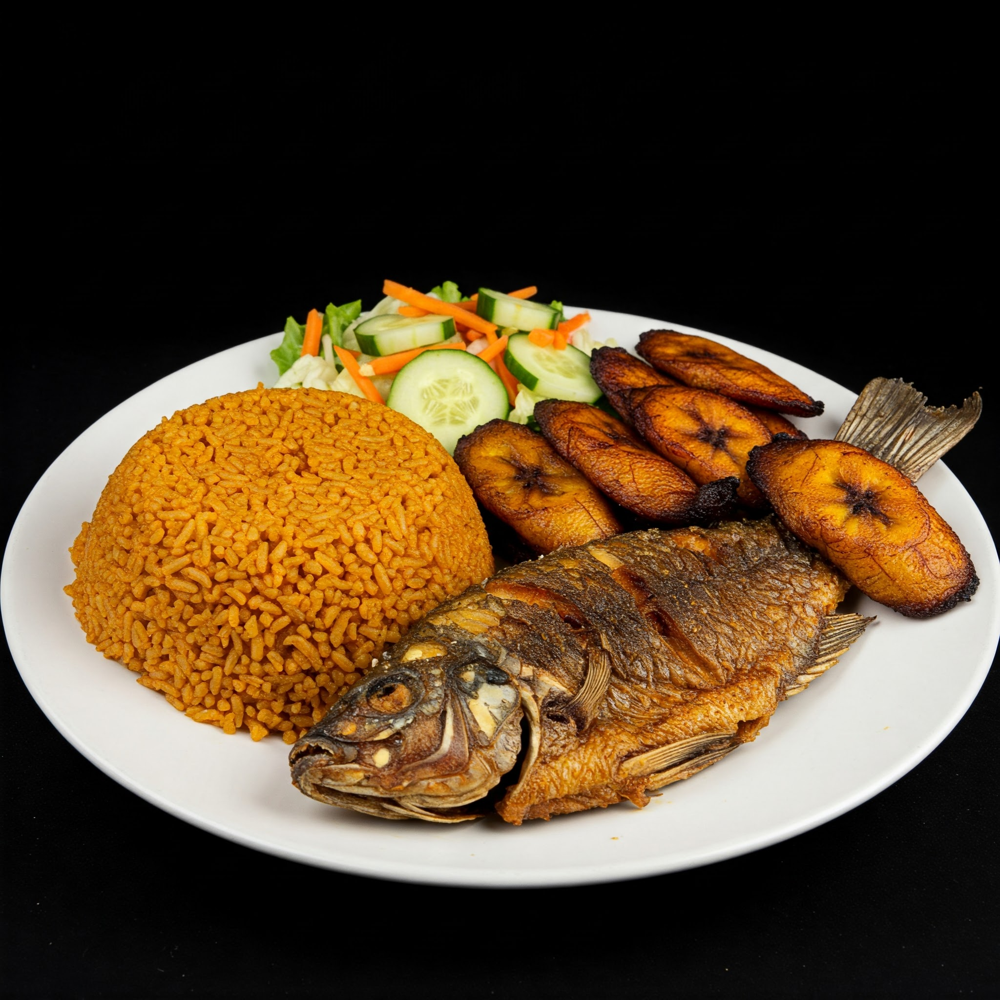

Jollof,Tilapia and salad Ghanaian dish

Ingredients
- Long grain rice
- Onions
- Tilapia
- Ripped Plantain
- Lettuce
- Carrot
- Cucumber
- Bell pepper
- Fresh Tomatoes
- Tomato Paste
- Vegetable Oil
- Black pepper
- Garlic powder
- Ginger powder
- Curry Powder
- Natural Spices(funnel, rosemary, bayleaf, corriander)
- Seasoning cubes
- Salt
Preparation
Jollof
- Heat a little amount of vegetable oil in a large pot over medium heat, add 1 large Onions and stir until softened
- Add 8 chopped tomatoes, 3 blended fresh pepper, little amount of tomato paste, 1/2 teaspoon of black pepper, 1/2 teaspoon of curry powder, 1 teaspoon of ginger paste, 1 teaspoon of garlic paste, add 1 teaspoon of natural spices and add some salt to taste and 1 cube of the seasoning of your choice. Stir until properly mixed and cook until the tomatoes have softened and the oil has separated from the mixture.
- Add two cups of long grain rice and add a cup of water. Allow it to boil,then reduce to low heat, cover and simmer for 20 minutes
Vgetable salad
- wash and chop lettuce, tomatoes, onion, cucumber, and bell pepper. Combine and add them to large bowl.
- add 1/2 teaspoon of vegetable oil, a teaspoon of salt and 1/2 teaspoon of black pepper
- Stir until properly coated and mixed
Fried Plantain
- Heat a little amount of vegetable oil in a frying pan over medium heat
- Peel and slice the plantain to your desired size and wash with salty water
- Add the plantain to the oil and fry until it is golden brown
Grilled tilapia
- pre heat the grill to medium heat
- Season the tilapia with salt, black pepper, garlic and onion paste
- Brush the tilapia with vegetable oil and cook through for about 4 to 5 minutes
- Serve the the jollof rice with vegetable salad, Fried plantain, and grilled tilapia and enjoy sumptuous your meal
This recipe is a healthy and balanced Ghanaian meal that is packed with nutrients and flavor. It is also a good source of protein, fiber, and vitamins. The jollof rice is a flavorful and filling dish that is made with rice, tomatoes, and peppers. The grilled tilapia is a lean source of protein that is cooked to perfection. The boiled greens are a good source of vitamins and minerals. The fried plantains are a delicious and healthy side dish that is made with ripe plantains.
| Ingredient |
Nutrient |
Amount per serving |
| Vegetable oil |
calories
fats |
500-700 calories
20-30 grams |
| Tilapia |
Protein |
30-40 grams |
| Rice and plantain |
carbohydrate |
80-100 grams |
| Rice vegetable and plantain |
fiber |
10-15 grams |
| Vegetables and leafy green in salad |
Vitamin A
Vitamin C |
500-1000 IU
50-150 mg |